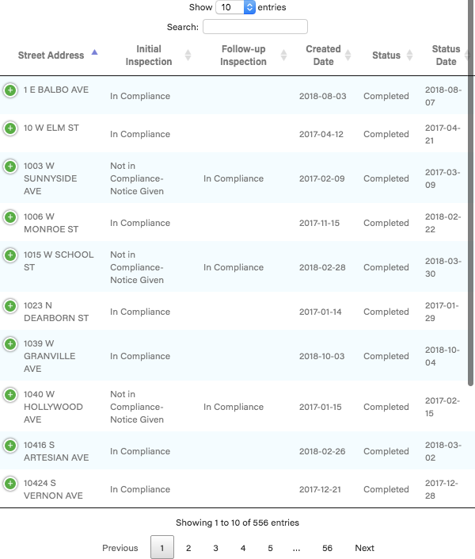

<% t.markdown = require('markdown-it'); %>
<% if (COPY.labels.headline) { %>
<%= t.smarty(COPY.labels.headline) %>
<% } %>
<% if (COPY.labels.subhed) { %>
<%= t.markdown({html: true}).render(COPY.labels.subhed) %>
<% } %>

<% if (COPY.labels.footnote) { %>
<% } %>